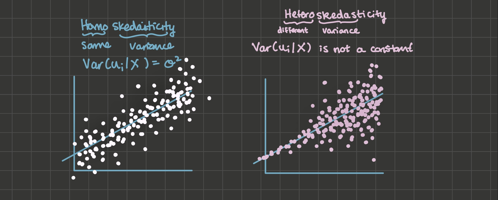
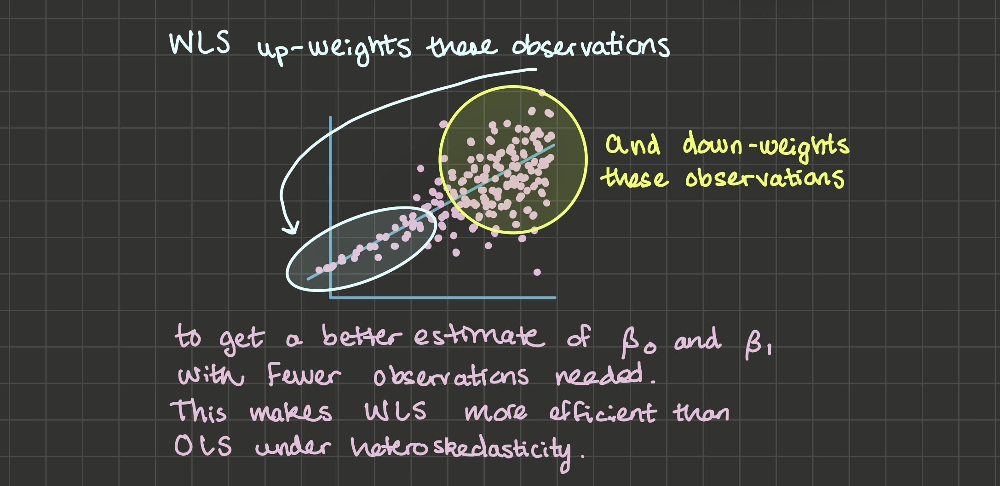
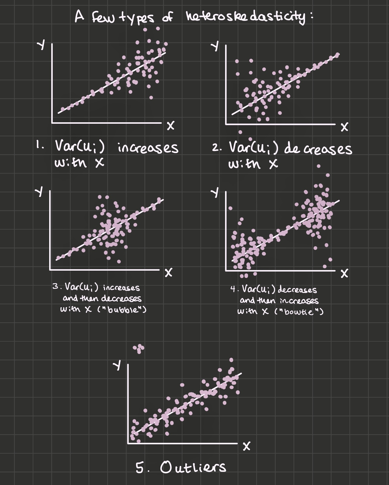

6 Heteroskedasticity
6.1 Overview
Definition. Homoskedasticity: \(Var(u_i | X)\) is a constant.
Definition. Heteroskedasticity: \(Var(u_i | X)\) is some non-constant function of X.
Under heteroskedasticity:
- OLS is unbiased,
- But OLS standard errors will not be correct. They could be too small or too large.
- OLS is no longer BLUE because weighted least squares (WLS) is more efficient.
Look for heteroskedasticity by visual inspection of your data. There are also two formal statistical tests for heteroskedasticity: the Goldfeld-Quandt test and the White test.
6.2 Gauss-Markov Assumptions
OLS is BLUE (the best linear unbiased estimator) if:
The data generating process is linear in parameters with an additive disturbance
Explanatory variables X are exogeneous: \(E(u_i | X) = 0\)
Explanatory variables X have variation and are not perfectly collinear
\(u_i\) is iid (independently and identically distributed) \(N(0, \sigma^2)\)
- If the model has an intercept, the intercept de-means \(u_i\), so \(E[u_i] = 0\) is a freebie
- Homoskedasticity: \(Var(u_i) = \sigma^2\), a constant
- No autocorrelation: \(E[u_i, u_j] = 0 \forall i \neq j\): an assumption we’ll discuss in the chapter on time series
We needed assumptions 1-3 in the proof of the unbiasedness of OLS, so those assumptions are required for OLS to be unbiased.
We did not need assumption 4 in that proof, so if only assumption 4 is violated, OLS will remain unbiased. But we used assumption 4 when we derived OLS standard errors, so when assumption 4 is violated, OLS standard errors will be incorrect.
6.3 Detecting Heteroskedasticity through Visual Inspection
Heteroskedasticity tends to be obvious when you plot some explanatory variable on the x-axis and your dependent variable on the y-axis. In the image below, the left hand side illustrates an example of homoskedasticity, where the variance of the u’s seem constant across X. The right hand side illustrates an example of heteroskedasticity, where the variance of the u’s seems to start small and then increase with X.

6.4 Weighted Least Squares
Under heteroskedasticity, OLS is no longer the best linear unbiased estimator because weighted least squares (WLS) is more efficient. WLS is very similar to OLS except that you can use it to re-weight observations according to the variance of the \(u_i\)’s:

Note: heteroskedasticity is the reason you’d see GDP/capita instead of GDP as the dependent variable in a model.
6.5 General types of heteroskedasticity
We’ll refer to five general types of heteroskedasticity: “increasing \(var(u_i)\)”, “decreasing \(var(u_i)\)”, “bubble”, “bowtie”, and heteroskedasticity due to outliers.

6.6 Tests for heteroskedasticity
6.6.1 Goldfeld-Quandt
Arrange the dataset by the explanatory variable you think is associated with the heteroskedasticity.
Estimate your model using only the first 3/8 of the data (that is, only low values for x). Then do the same thing for the last 3/8 of the data (only large values for x).
Calculate the SSR’s (sum of squared residuals \(\sum_i e_i^2\)) for each of the regressions in step 2. The test statistic is \(\frac{SSR_2}{SSR_1}\) where the larger SSR is in the numerator. The idea is that under homoskedasticity, both sides will have similar SSR’s and \(\frac{SSR_2}{SSR_1}\) will be near 1. But under heteroskedasticity, \(\frac{SSR_2}{SSR_1}\) would be much larger than 1.
Compare the test statistic to the critical value: \(F_{.999, \ df1 = df2 = (\frac{3}{8} n) - k}\), where k is the number of explanatory variables in the model. If the test statistic is larger than the critical value, the evidence points toward rejecting the null hypothesis of homoskedasticity.
Which types of heteroskedasticity will the Goldfeld-Quandt test detect?
6.6.2 White Test
Estimate the model to get OLS residuals \(e_i\). Square it to get \(e_i^2\). The intuition for the White test is: Does x have explanatory power over \(e_i^2\)? If so, that’s evidence of possible heteroskedasticity.
The test statistic is n * \(R^2\) where the \(R^2\) is from this regression:
lm(e^2 ~ x + x^2). Or for a multiple regression:lm(e^2 ~ x1 + x2 + x1:x2 + x1^2 + x2^2).Compare the test statistic to the critical value: \(\chi^2_{.999, \ df = k}\), where k is the number of explanatory variables in step 2. Just like in the Goldfeld-Quandt test, a test statistic that’s larger than the critical value points to rejecting the null hypothesis of homoskedasticity.
Which types of heteroskedasticity will the White test detect?
6.7 Heteroskedasticity-Consistent Standard Errors
In chapter 2, we saw that under gauss-markov assumption 4, OLS standard errors are:
\[se(\hat{\beta_1}) = \sqrt{\frac{\sum_i e_i^2}{(n -1 )\sum_i (x_i - \bar{x})^2}}\]
Without the homoskedasticity assumption, I’ll add an “HC” to indicate they are heteroskedasticity-consistent standard errors:
\[\begin{align*} Var(\hat{\beta_1} | X)^{HC} &= \sum_i w_i^2 Var(u_i | X) \\ &= \frac{\sum_i (x_i - \bar{x})^2 Var(u_i | X)}{(\sum_i (x_i - \bar{x})^2)^2} \end{align*}\]
Which White (1980) showed can be estimated by:
\[se(\hat{\beta_1})^{HC} = \sqrt{\frac{\sum_i (x_i - \bar{x})^2 e_i^2}{(\sum_i (x_i - \bar{x})^2)^2}}\]
When you account for heteroskedasticity by using HC standard errors instead of conventional standard errors, you may see that, depending on the type of heteroskedasticity, sometimes your standard errors will increase and sometimes they will decrease. Let’s explore this phenomenon to understand why:
\[\begin{align*} HC \ standard \ errors &> Conv \ standard \ errors \ when: \\ \sqrt{\frac{\sum_i (x_i - \bar{x})^2 e_i^2}{(\sum_i (x_i - \bar{x})^2)^2}} &> \sqrt{\frac{\sum_i e_i^2}{(n -1 )\sum_i (x_i - \bar{x})^2}} \\ \frac{\sum_i (x_i - \bar{x})^2 e_i^2}{(\sum_i (x_i - \bar{x})^2)^2} &> \frac{\sum_i e_i^2}{(n -1 )\sum_i (x_i - \bar{x})^2} \\ \frac{\sum_i (x_i - \bar{x})^2 e_i^2}{\sum_i (x_i - \bar{x})^2} &> \frac{\sum_i e_i^2}{n -1} \\ \sum_i (x_i - \bar{x})^2 e_i^2 &> \frac{\sum_i e_i^2 \sum_i (x_i - \bar{x})^2}{n - 1} \end{align*}\]
Multiply both sides by \(\frac{1}{n - 1}\):
\[\frac{\sum_i (x_i - \bar{x})^2 e_i^2}{n - 1} > \frac{\sum_i e_i^2 \sum_i (x_i - \bar{x})^2}{(n - 1)^2}\]
And if we take the equation above and apply probability limits, we’ve found that HC standard errors > Conv standard errors when:
\[E[(x_i - \bar{x})^2 e_i^2] > E[(x_i - \bar{x})^2] E[e_i^2]\]
Or, subtracting the right hand side from both sides:
\[E[(x_i - \bar{x})^2 e_i^2] - E[(x_i - \bar{x})^2] E[e_i^2] > 0\]
Finally, recall that you showed in your classwork that \(Cov(X, Y) = E[XY] - E[X] E[Y]\), so \(Cov(e_i^2, (x_i - \bar{x})^2) = E[e_i^2 (x_i - \bar{x})^2] - E[e_i^2] E[(x_i - \bar{x})^2]\).
So HC standard errors > Conv standard errors when:
\[Cov(e_i^2, (x_i - \bar{x})^2) > 0\]
This formula has interesting intuition about heteroskedasticity:
6.8 Exercises
Classwork 8: Heteroskedasticity (analytical)
Koans 11-14: lm, statistical distributions, and functions
Classwork 9: Heteroskedasticity (R)
Koans 15-16: map
6.9 References
Dougherty (2016) Chapter 7: Heteroskedasticity
Angrist and Pischke (2010)